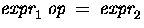
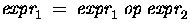

In the remainder of the Chapter we will look at the basic aspects of C programs such as C program structure, the declaration of variables, data types and operators. We will assume knowledge of a high level language, such as PASCAL.
It is our intention to provide a quick guide through similar C principles to most high level languages. Here the syntax may be slightly different but the concepts exactly the same.
C does have a few surprises:
The milestones in C's development as a language are listed below:
We briefly list some of C's characteristics that define the language and also have lead to its popularity as a programming language. Naturally we will be studying many of these aspects throughout the course.
C has now become a widely used professional language for various reasons.
Its main drawback is that it has poor error detection which can make it off putting to the beginner. However diligence in this matter can pay off handsomely since having learned the rules of C we can break them. Not many languages allow this. This if done properly and carefully leads to the power of C programming.
As an extreme example the following C code (mystery.c) is actually legal C code.
#include <stdio.h>
main(t,_,a)
char *a;
{return!0<t?t<3?main(-79,-13,a+main(-87,1-_,
main(-86, 0, a+1 )+a)):1,t<_?main(t+1, _, a ):3,main ( -94, -27+t, a
)&&t == 2 ?_<13 ?main ( 2, _+1, "%s %d %d\n" ):9:16:t<0?t<-72?main(_,
t,"@n'+,#'/*{}w+/w#cdnr/+,{}r/*de}+,/*{*+,/w{%+,/w#q#n+,/#{l,+,/n{n+\
,/+#n+,/#;#q#n+,/+k#;*+,/'r :'d*'3,}{w+K w'K:'+}e#';dq#'l q#'+d'K#!/\
+k#;q#'r}eKK#}w'r}eKK{nl]'/#;#q#n'){)#}w'){){nl]'/+#n';d}rw' i;# ){n\
l]!/n{n#'; r{#w'r nc{nl]'/#{l,+'K {rw' iK{;[{nl]'/w#q#\
n'wk nw' iwk{KK{nl]!/w{%'l##w#' i; :{nl]'/*{q#'ld;r'}{nlwb!/*de}'c \
;;{nl'-{}rw]'/+,}##'*}#nc,',#nw]'/+kd'+e}+;\
#'rdq#w! nr'/ ') }+}{rl#'{n' ')# }'+}##(!!/")
:t<-50?_==*a ?putchar(a[31]):main(-65,_,a+1):main((*a == '/')+t,_,a\
+1 ):0<t?main ( 2, 2 , "%s"):*a=='/'||main(0,main(-61,*a, "!ek;dc \
i@bK'(q)-[w]*%n+r3#l,{}:\nuwloca-O;m .vpbks,fxntdCeghiry"),a+1);}
It will compile and run and produce meaningful output. Try this program out. Try to compile and run it yourself. Alternatively you may run it from here and see the output.
Clearly nobody ever writes code like or at least should never. This piece of code actually one an international Obfuscated C Code Contest http://reality.sgi.com/csp/iocc The standard for C programs was originally the features set by Brian Kernighan. In order to make the language more internationally acceptable, an international standard was developed, ANSI C (American National Standards Institute).
A C program basically has the following form:
We must have a main() function.
A function has the form:
type function_name (parameters)
{
local variables
C Statements
}
If the type definition is omitted C assumes that function returns an integer type. NOTE: This can be a source of problems in a program.
So returning to our first C program:
/* Sample program */
main()
{
printf( "I Like C \n");
exit ( 0 );
}
NOTE:
Let us look at another printing statement:
printf(".\n.1\n..2\n...3\n");
The output of this would be:
.
.1
..2
...3
C has the following simple data types:
The Pascal Equivalents are:

On UNIX systems all ints are long ints unless specified as
short int explicitly.
NOTE: There is NO Boolean type in C -- you should use char,
int or (better) unsigned char.
Unsigned can be used with all char and int types.
To declare a variable in C, do:
var_type list variables;
e.g. int i,j,k;
float x,y,z;
char ch;
Global variables are defined above main() in the following way:-
short number,sum;
int bignumber,bigsum;
char letter;
main()
{
}
It is also possible to pre-initialise global variables using the =
operator for assignment.
NOTE: The = operator is the same as := is Pascal.
For example:-
float sum=0.0;
int bigsum=0;
char letter=`A';
main()
{
}
This is the same as:-
float sum;
int bigsum;
char letter;
main()
{
sum=0.0;
bigsum=0;
letter=`A';
}
...but is more efficient.
C also allows multiple assignment statements using =, for example:
a=b=c=d=3;
...which is the same as, but more efficient than:
a=3;
b=3;
c=3;
d=3;
This kind of assignment is only possible if all the variable types in the statement are the same.
You can define your own types use typedef. This will have greater relevance later in the course when we learn how to create more complex data structures.
As an example of a simple use let us consider how we may define two new types real and letter. These new types can then be used in the same way as the pre-defined C types:
typedef real float;
typedef letter char;
Variables declared:
real sum=0.0;
letter nextletter;
C uses formatted output. The printf function has a special formatting character (%) -- a character following this defines a certain format for a variable:
%c -- characters %d -- integers %f -- floats
e.g. printf("%c %d %f",ch,i,x);
NOTE: Format statement enclosed in ``...'', variables follow after.
Make sure order of format and variable data types match up.
scanf() is the function for inputting values to a data structure: Its
format is similar to printf:
i.e. scanf("%c %d %f",&ch,&i,&x);
NOTE: & before variables. Please accept this for now and remember to include it. It is to do with pointers which we will meet later (Section 17.4.1).
ANSI C allows you to declare constants. When you declare a constant it is a bit like a variable declaration except the value cannot be changed.
The const keyword is to declare a constant, as shown below:
int const a = 1; const int a =2;
Note:
The preprocessor #define is another more flexible (see Preprocessor Chapters) method to define constants in a program.
You frequently see const declaration in function parameters. This says simply that the function is not going to change the value of the parameter.
The following function definition used concepts we have not met (see chapters on functions, strings, pointers, and standard libraries) but for completenes of this section it is is included here:
void strcpy(char *buffer, char const *string)
The second argiment string is a C string that will not be altered by the string copying standard library function.
As well as the standard arithmetic operators (+ - * /) found in most languages, C provides some more operators. There are some notable differences with other languages, such as Pascal.
Assignment is = i.e. i = 4; ch = `y';
Increment ++, Decrement -- which are more efficient than their long hand equivalents, for example:-- x++ is faster than x=x+1.
The ++ and -- operators can be either in post-fixed or pre-fixed. With pre-fixed the value is computed before the expression is evaluated whereas with post-fixed the value is computed after the expression is evaluated.
In the example below, ++z is pre-fixed and the w-- is post-fixed:
int x,y,w;
main()
{
x=((++z)-(w--)) % 100;
}
This would be equivalent to:
int x,y,w;
main()
{
z++;
x=(z-w) % 100;
w--;
}
The % (modulus) operator only works with integers.
Division / is for both integer and float division. So be careful.
The answer to: x = 3 / 2 is 1 even if x is declared a float!!
RULE: If both arguments of / are integer then do integer division.
So make sure you do this. The correct (for division) answer to the above is x
= 3.0 / 2 or x= 3 / 2.0 or (better) x = 3.0 / 2.0.
There is also a convenient shorthand way to express computations in C.
It is very common to have expressions like: i = i + 3 or x = x*(y + 2)
This can written in C (generally) in a shorthand form like this:

which is equivalent to (but more efficient than):

So we can rewrite i = i + 3 as i += 3
and x = x*(y + 2) as x *= y + 2.
NOTE: that x *= y + 2 means x = x*(y + 2) and NOT x = x*y + 2.
To test for equality is ==
A warning: Beware of using ``='' instead of ``=='', such as writing
accidentally
if ( i = j ) .....
This is a perfectly LEGAL C statement (syntactically speaking) which copies
the value in "j" into "i", and delivers this value, which will then be
interpreted as TRUE if j is non-zero. This is called
assignment by value -- a key feature of C.
Not equals is: !=
Other operators < (less than) , > (grater than), <= (less than or equals),
>= (greater than or equals) are as usual.
Logical operators are usually used with conditional statements which we shall
meet in the next Chapter.
The two basic logical operators are:
&& for logical AND, || for logical OR.
Beware & and | have a different meaning for bitwise AND and OR ( more on this later in Chapter 12).
It is necessary to be careful of the meaning of such expressions as a +
b * c
We may want the effect as either
(a + b) * c
or
a + (b * c)
All operators have a priority, and high priority operators are evaluated before
lower priority ones. Operators of the same priority are evaluated from
left to right, so that
a - b - c
is evaluated as
( a - b ) - c
as you would expect.
From high priority to low priority the order for all C operators (we have not met all of them yet) is:
( ) [ ] -> . ! - * & sizeof cast ++ - (these are right->left) * / % + - < <= >= > == != & | && || ?: (right->left) = += -= (right->left) , (comma)
Thus
a < 10 && 2 * b < c
is interpreted as
( a < 10 ) && ( ( 2 * b ) < c )
and
a =
b =
spokes / spokes_per_wheel
+ spares;
as
a =
( b =
( spokes / spokes_per_wheel )
+ spares
);
Write C programs to perform the following tasks.
Exercise 12270
Input two numbers and work out their sum, average and sum of the squares of the numbers.
Exercise 12271
Input and output your name, address and age to an appropriate structure.
Exercise 12272
Write a program that works out the largest and smallest values from a set of 10 inputted numbers.
Exercise 12273
Write a program to read a "float" representing a number of degrees Celsius, and print as a "float" the equivalent temperature in degrees Fahrenheit. Print your results in a form such as
100.0 degrees Celsius converts to 212.0 degrees Fahrenheit.
Exercise 12274
Write a program to print several lines (such as your name and address). You may use either several printf instructions, each with a newline character in it, or one printf with several newlines in the string.
Exercise 12275
Write a program to read a positive integer at least equal to 3, and print out all possible permutations of three positive integers less or equal to than this value.
Exercise 12276
Write a program to read a number of units of length (a float) and print out the area of a circle of that radius. Assume that the value of pi is 3.14159 (an appropriate declaration will be given you by ceilidh - select setup).
Your output should take the form: The area of a circle of radius ... units is .... units.
If you want to be clever, and have looked ahead in the notes, print the message Error: Negative values not permitted. if the input value is negative.
Exercise 12277
Given as input a floating (real) number of centimeters, print out the equivalent number of feet (integer) and inches (floating, 1 decimal), with the inches given to an accuracy of one decimal place.
Assume 2.54 centimeters per inch, and 12 inches per foot.
If the input value is 333.3, the output format should be:
333.3 centimeters is 10 feet 11.2 inches.
Exercise 12278
Given as input an integer number of seconds, print as output the equivalent time in hours, minutes and seconds. Recommended output format is something like
7322 seconds is equivalent to 2 hours 2 minutes 2 seconds.
Exercise 12279
Write a program to read two integers with the following significance.
The first integer value represents a time of day on a 24 hour clock, so that 1245 represents quarter to one mid-day, for example.
The second integer represents a time duration in a similar way, so that 345 represents three hours and 45 minutes.
This duration is to be added to the first time, and the result printed out in the same notation, in this case 1630 which is the time 3 hours and 45 minutes after 12.45.
Typical output might be Start time is 1415. Duration is 50. End time is 1505.
There are a few extra marks for spotting.
Start time is 2300. Duration is 200. End time is 100.